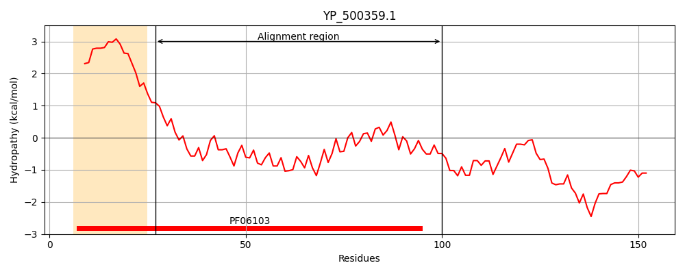
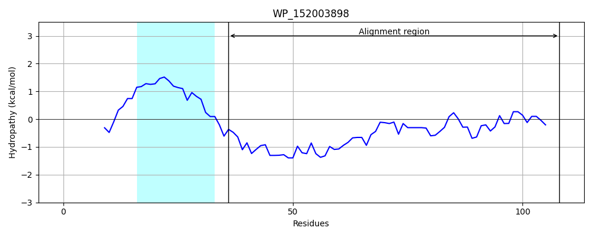
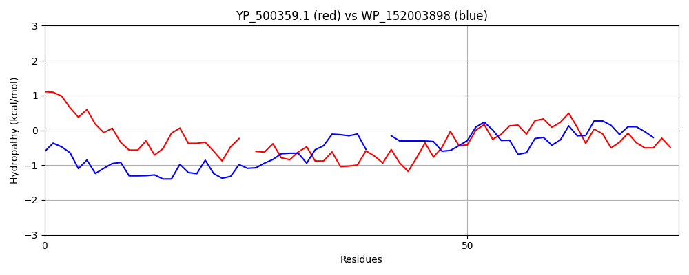

Hit Accession: WP_152003898
Hit TCID: 1.E.66.4.5
Hit Description: gnl|BL_ORD_ID|21980 gnl|TC-DB|WP_152003898.1|1.E.66.4.5 hypothetical protein [Desulfoluna spongiiphila]
Mach Len: 75
e:0.000006
Query TMS Count : 1
Hit TMS Count: 1
TMS-Overlap Score: 0.900000
Predicted Substrates:None
BLAST Alignment:
| Protein Hydropathy Plots: | |
|---|---|
|  |  |
Pairwise Alignment-Hydropathy Plot: | |
|  | |